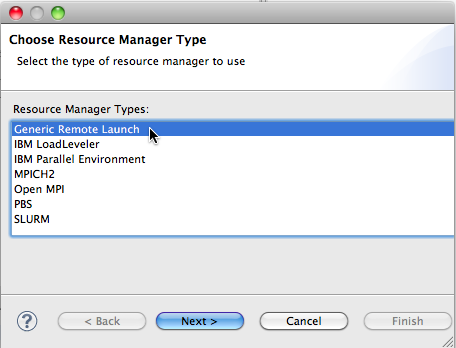

When you create a new resource manager, you are able to select a number of different types (Open MPI, PBS, etc.) One of these types is "Generic Remote Launch." This resource manager will simply run an executable on a remote machine using ssh. Using this resource manager on a simple serial program is a good way to ensure that the basic ssh functionality is working correctly.
To create a Generic Remote Launch resource manager, open the Parallel Runtime Perspective and right-click in the Resource Managers view.
Select the Generic Remote Launch type of Resource Manager and click Next.

In the Connection Configuration Dialog, fill in the connection information including the Remote Service Provider (e.g. Remote Tools) and the Connection name. If you have not already configured a connection, you can do it here. Tunneling Options allow communication to be tunneled over a single connection if supported by the remote service provider. To enable tunneling, select the SSH port forwarding radio button.
Click Next, or Finish.
If you clicked Next, the next page allows you to change the default name etc. for this resource manager. Then click Finish.

Back in the Resource Managers view, you should see the new resource manager. Right-click on the new resource manager and choose "Start Resource Manager" to start it. Its icon should turn green.

Now, to run a program with the Generic Remote Launch Resource Manager, create a simple remote project. Create a run configuration for a Parallel Application, and select the Generic Remote Launch Resource Manager that you just created. When you run, your program should run on the remote machine.
Back to Resource Managers.